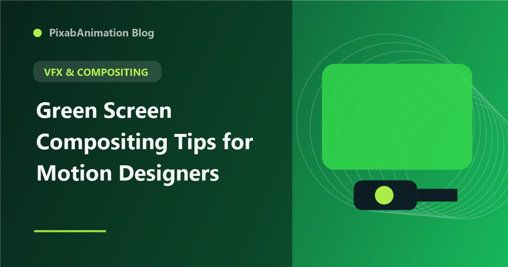

Green Screen Compositing Tips for Motion Designers

Green screen compositing is an essential skill for motion designers who work with live-action footage, product videos, or any content that needs clean subject extraction. While the basic concept is simple — remove the green background and replace it with something else — achieving professional results requires understanding lighting, keying techniques, and compositing best practices. This guide covers everything motion designers need to know about professional green screen compositing.
Lighting for Clean Keys
The foundation of any successful green screen composite is proper lighting. The green screen itself must be evenly lit with dedicated lights positioned to eliminate shadows and hot spots. The subject should be lit separately, at least 6-8 feet from the screen to prevent green spill. Key, fill, and backlighting on the subject creates separation from the background. The goal is even illumination across the green screen (within 1 f-stop variation) with the subject brightly and cleanly lit.
Choosing the Right Keying Tool
After Effects offers several keying tools, each suited to different scenarios. Keylight (1.2) is the industry standard for most green screen work, providing robust spill suppression and edge refinement. The Difference Matte works well for static shots without a green screen. The Linear Color Key is effective for simple keys on well-lit footage. For challenging footage — fine hair, motion blur, or uneven lighting — dedicated plugins like Primatte Keyer and Red Giant Keying Suite offer advanced capabilities.
The Professional Keying Workflow
A professional keying workflow starts with correcting the footage — adjust contrast and color balance before applying the key. Apply Keylight, sample the screen color, and adjust Clip Black and Clip White to create a clean alpha. Use Screen Pre-blur for noisy footage (0.5-1.0 pixels). Apply Screen Shrink/Grow to tighten edges. Use Inside Mask and Outside Mask to confine the key to the subject area. Finally, use Spill Suppression to remove green reflections from the subject.
Edge Refinement
The edges of a keyed subject are where amateur results become apparent. Professional edge refinement includes using the Refine Edge tool in After Effects, applying a slight choke to remove fringe pixels, adding a subtle blur to the alpha edge for natural softness, and using the Advanced Spill Suppressor for challenging green reflections. For hair and fine details, the Refine Soft Matte effect provides exceptional edge detail retention.
Matching Foreground and Background
A convincing composite requires matching the foreground subject to the background environment. Color grading the subject to match the background's color temperature and contrast creates visual unity. Adding matching shadows — both drop shadows on the background and ground shadows — grounds the subject in the scene. Matching grain or noise levels between foreground and background prevents the subject from looking artificially clean. Atmospheric effects like fog, haze, or depth of field further integrate the elements.
Troubleshooting Common Issues
Common green screen problems include green spill — appearing as green fringing on the subject's edges. Solutions include better subject-to-screen distance and advanced spill suppression. Motion blur at edges creates semi-transparent pixels that confuse keyers — using Screen Pre-blur and edge refinement techniques helps. Uneven screen lighting requires masks and adjustment layers to correct specific areas. For the most challenging footage, rotoscoping the problematic frames and combining with keying produces superior results.